조기에 치료할수록 비용과 시간은 물론, 통증도 줄일 수 있습니다
조기에 치료할수록 비용과 시간은 물론, 통증도 줄일 수 있습니다
간단히 제거하고 치과 충전물인 레진으로 채우는 치료입니다
치아 색과 유사한 색조를 구현하여 자연스럽게 진행합니다
| BEFORE | 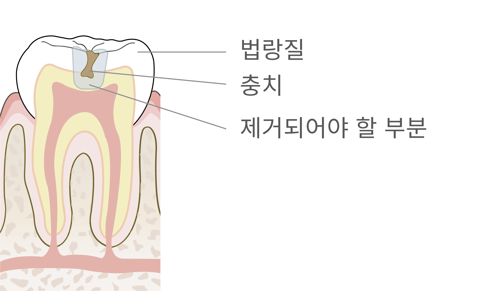 | 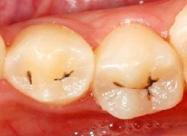 |
| AFTER | 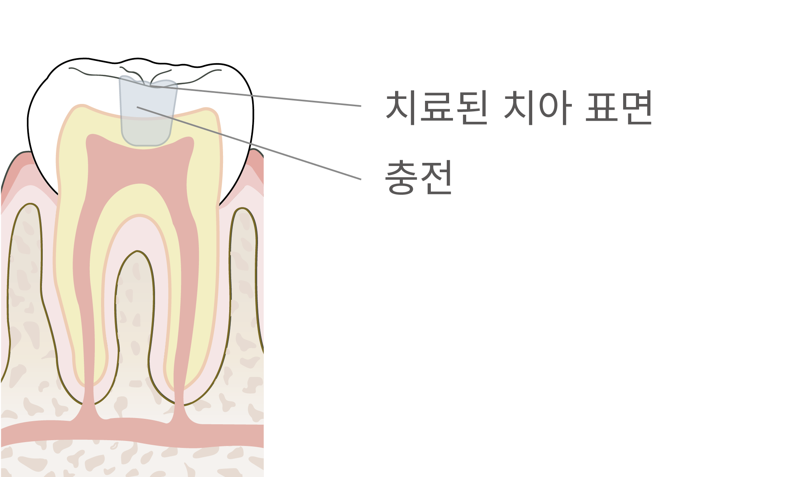 | 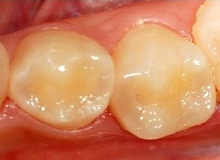 |
본을 뜨는 인상채득 후 기공 과정을 거쳐 정밀하게 부착하는 과정을 거치게 됩니다
| BEFORE | 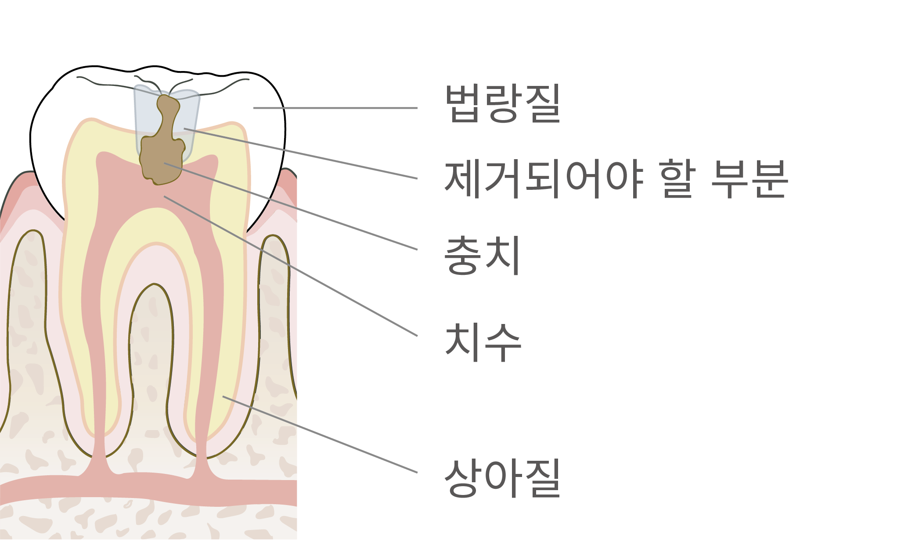 | 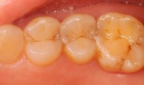 |
| AFTER | 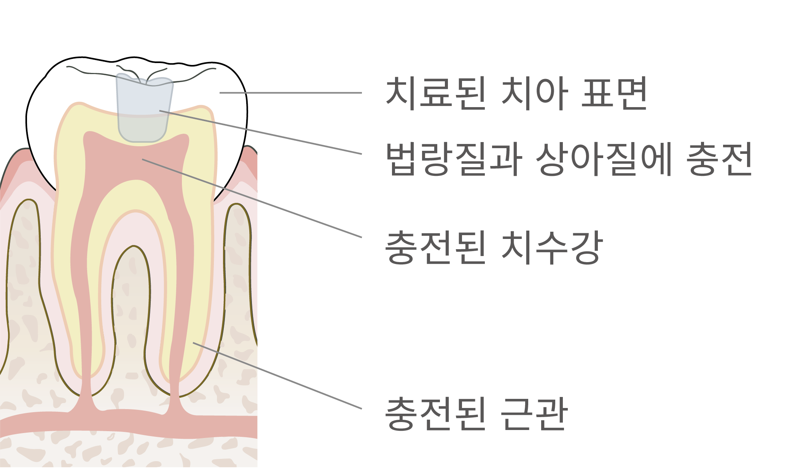 | 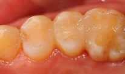 |
치아 내부에 신경과 혈관을 제거한 후 치과용 재료로 충전하여 신경치료를 진행하고 보철을 씌워줍니다
| BEFORE | 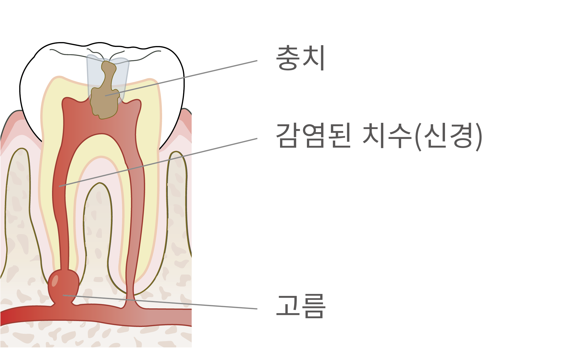 | 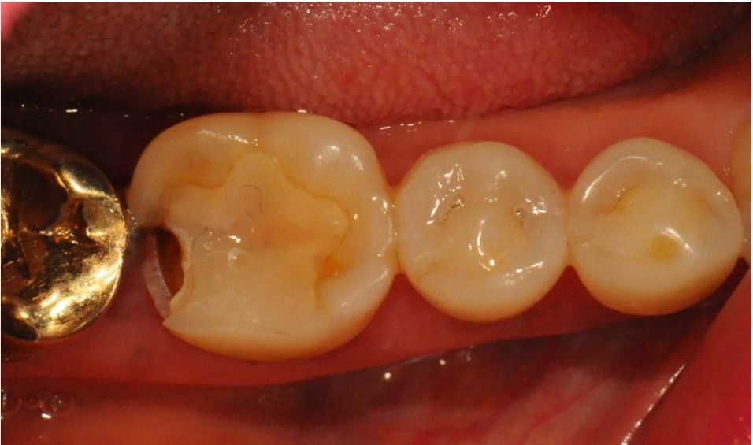 |
| AFTER | 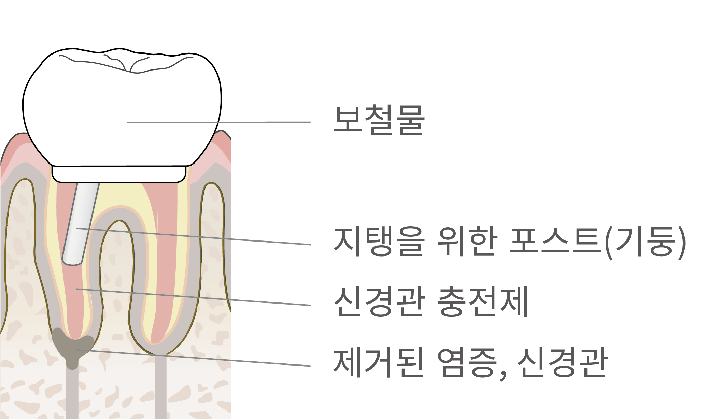 | 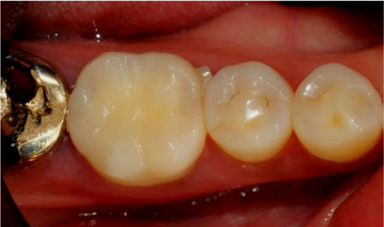 |
 대한민국 국민들이 가장 많이 앓고 있는 질환 2위 치주 질환, 흔히 풍치라고 알고 있는 잇몸 질환입니다
대한민국 국민들이 가장 많이 앓고 있는 질환 2위 치주 질환, 흔히 풍치라고 알고 있는 잇몸 질환입니다세균에 의해 잇몸에 염증을 발생시켜 부종, 출혈, 통증 등의 증상이 나타날 수 있으며
무엇보다 치조골을 파괴하여 발치에 이를 수 있어 치료가 꼭 필요합니다
건강한 사람도 6개월에서 1년 주기로 받으시기를 권장 드리며, 술후 약간의 출혈과 시림 증상은 곧 사라지는 정상적인 과정입니다.
어느정도 치주염이 진행된 경우 진행하는 단계로, 상태에 따라 3회로 나누어 스케일링과 함께 진행합니다.
불규칙한 잇몸뼈를 가지고 있거나 잇몸 너무 깊은 곳에 치석이 있는 경우는 치주 판막술로 진행합니다.
본인 부담금 1만원대로 만나보세요
건강보험에 가입된
만 19세 이상 국민
1만원대
매년 1월 1일부터
12월 31일 사이
1회

|
사랑니가 신경관과 가까이 있어 신경손상의 위험이 높을 경우에는 3D CT촬영을 반드시 동반하여야 합니다. 그리고 반드시 치과 전문의에 의해 주의하여 발치해야 합니다. |
|
바로 나지 못하고 누워있거나 바르지 못한 방향으로 나는 경우가 많으며 형태 이상을 보이는 경우도 많습니다 이럴 경우 대부분 문제가 발생될 가능성이 높아 발치를 권해드립니다 |

|

사랑니로 인한 불편함 호소
치료 방안
상악 왜소치 사랑니와
하악 근심수평매복 사랑니 동시 발치